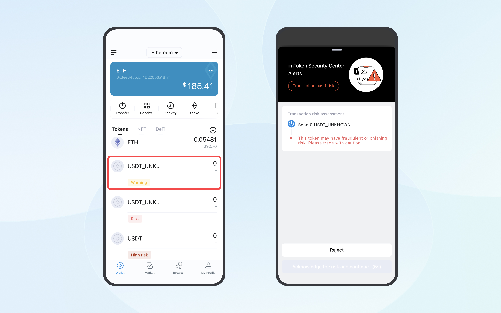

Tip: Update imToken to the latest version for improved detection and filtering of risky tokens.
Anyone can issue a token on blockchain without permission. So there are many scam tokens created on-chain by scammers.
By gathering reported fraudulent tokens from users and information provided by third-party security teams, imToken has classified risk tokens on Ethereum into the following categories:
- Warning: Tokens with potential risk
- Risk: Tokens with identified risk
- High Risk: Tokens with extremely high risk
When you transfer a token that has been labeled as "Warning", imToken will pop up a security alert.

And tokens marked as "Risk" or "High Risk" due to identified or extreme risks will not appear on the wallet page to stop users from falling victim to scam tokens.
Common fraudulent tokens are fake USDT, ETH, BNB and HT issued by scammers. Usually,scammers will lie to users that they could buy these tokens below market price, tricking users into transferring their tokens to the scammer's address and returning the users fake tokens. imToken will label any detected fake coins as "Risk" and conceal them.
Furthermore, the latest version of imToken identifies domain tokens as "Spam Token", which contain phishing links in their names. If a token named "Spam Token" is found in your wallet, it indicates it's a fraudulent token.
Note:
As a decentralized wallet, imToken supports all ERC-20 tokens by default. Thus, tokens that are not tagged doesn’t mean they are safe.
Please contact us through "Support and Feedback" in the App if you cannot tell whether a token received is fraudulent or not.
Related Articles: